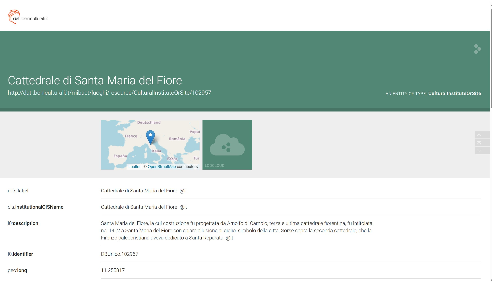

Query 1
First, we used the following query to find the Cattedrale di Santa Maria del Fiore in the ArCo database, after choosing the subject for our topic:
PREFIX rdfs: <http://www.w3.org/2000/01/rdf-schema#>
PREFIX arco: <https://w3id.org/arco/ontology/arco/>
SELECT DISTINCT ?building ?label
WHERE {
?building a arco:HistoricOrArtisticProperty ;
rdfs:label ?label .
FILTER(REGEX(?label, "Santa Maria del Fiore", "i"))
}
LIMIT 100
We found many irrelevant results, mostly to paintings, and decided to narrow the search by adding the name of the architect to the query.
The results of this query can be viewed here: LINK
Query 2
We added a clarification that this is a cathedral (building type) and we also decided to add the name of the architect of the dome, as this part of the church is unique. However, this was a mistake, as this filter is too rigid and we got 0 results😩😩😩.
PREFIX rdfs: <http://www.w3.org/2000/01/rdf-schema#>
PREFIX arco: <https://w3id.org/arco/ontology/arco/>
PREFIX a-cd: <https://w3id.org/arco/ontology/catalogue/>
SELECT DISTINCT ?cathedral ?label
WHERE {
{
?cathedral a arco:HistoricOrArtisticProperty ;
rdfs:label ?label .
FILTER(REGEX(?label, "Cattedrale di Santa Maria del Fiore", "i"))
FILTER(REGEX(?label, "Brunelleschi", "i"))
}
UNION
{
?cathedral a arco:HistoricOrArtisticProperty ;
rdfs:label ?label .
FILTER(REGEX(?label, "Cattedrale di Santa Maria del Fiore", "i"))
?cathedral a-cd:hasAuthor ?authorEntity .
?authorEntity rdfs:label ?authorLabel .
FILTER(REGEX(?authorLabel, "Filippo Brunelleschi", "i"))
}
OPTIONAL { ?cathedral a-cd:depiction ?depiction }
}
ORDER BY ASC(?label)
LIMIT 10
The results of this query can be viewed here: LINK
Query 3
We refined the previous query to exclude paintings and other artworks, returning only architectural and heritage entries related to Santa Maria del Fiore.
PREFIX rdfs: <http://www.w3.org/2000/01/rdf-schema#>
PREFIX arco: <https://w3id.org/arco/ontology/arco/>
SELECT DISTINCT ?building ?label ?type
WHERE {
?building rdfs:label ?label ;
a ?type .
FILTER(REGEX(?label, "Santa Maria del Fiore", "i"))
FILTER(!REGEX(?label, "dipinto|pittura|affresco|tela", "i"))
}
LIMIT 20
The results of this query can be viewed here: LINK
This makes it very easy to find the location of the building you need by clicking on the second link: LINK
